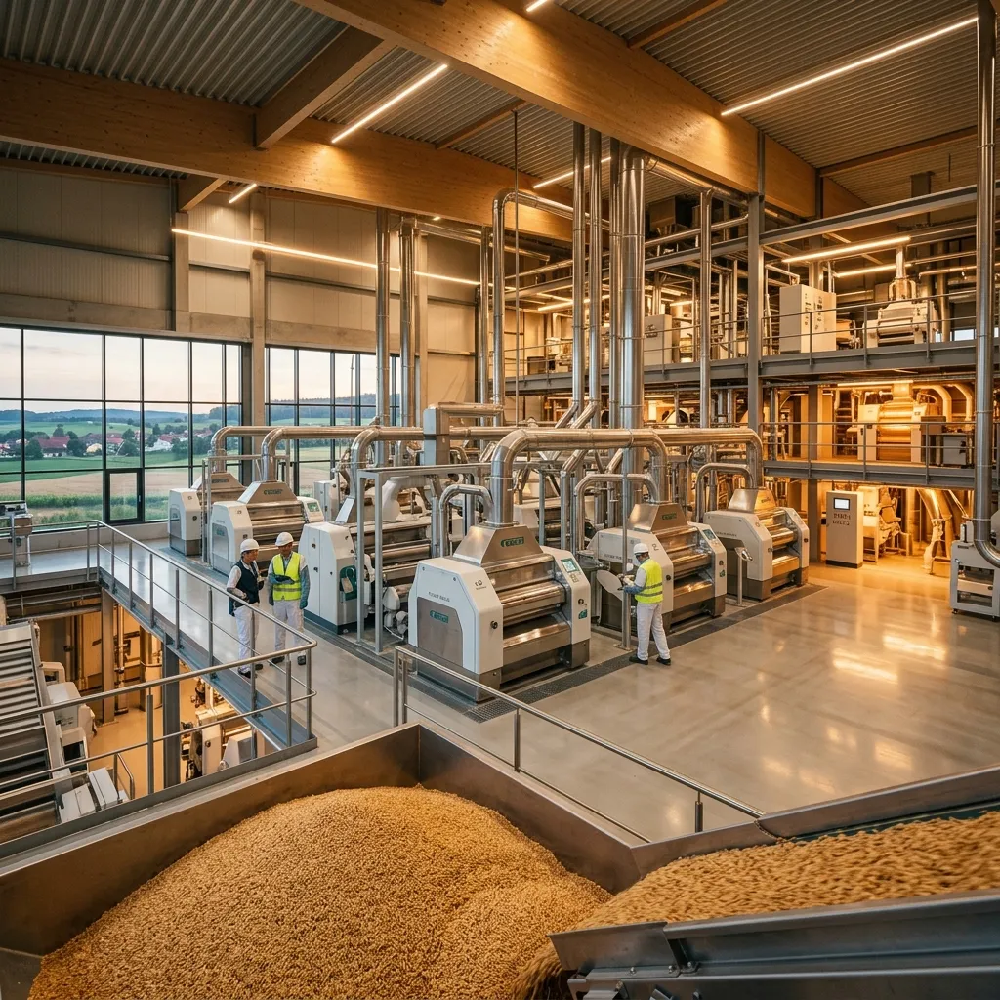

Kashi Flour Mills combines practical milling experience with modern process control in Quetta.
Kashi Flour Mills was founded to serve local markets with cleaner operations, predictable flour quality, and dependable buyer support. Our facility in Quetta Industrial Estate is designed for high-volume, disciplined production.
We work with trusted wheat sourcing channels and maintain controlled milling conditions to reduce variation across batches. The result is practical, stable flour performance for households, retailers, and bakery clients.

Kashi's production system is structured to protect flour quality at every stage, from intake to dispatch.
Wheat is selected against quality criteria before intake to support stable flour output.
Magnetic and screening stages remove unwanted material before milling begins.
Moisture adjustment supports clean bran separation and consistent flour texture.
Automated grinding, final screening, and secure packing complete the production cycle.